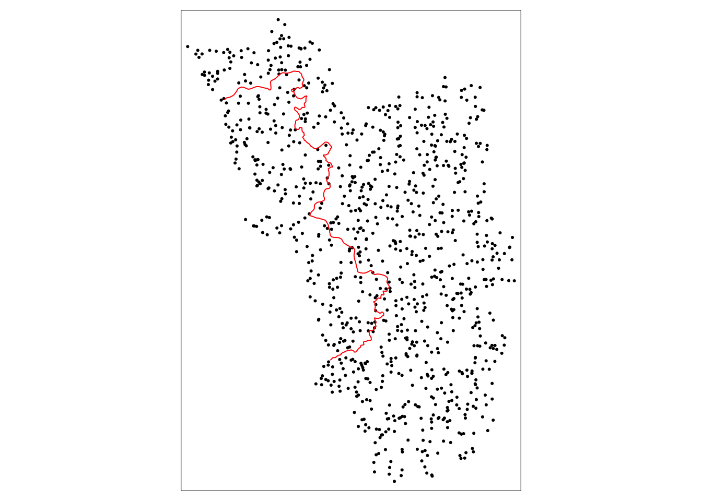
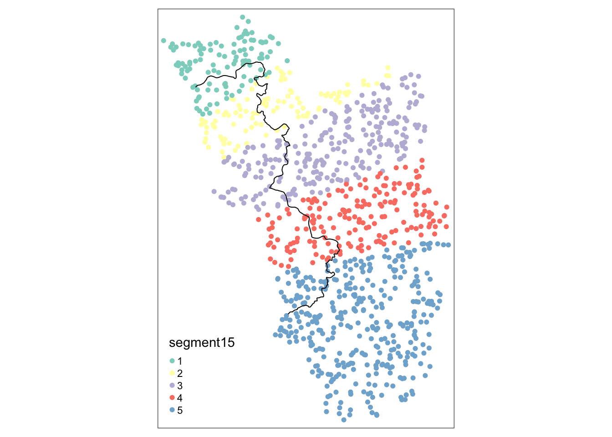

library(sf)
# library(devtools)
# devtools::install_github("axlehner/SpatialRDD")
library(SpatialRDD)
library(dplyr)
library(stargazer) 9 Пространственная разрывная регрессия
Примечание:
- Данные материалы являются переводом на русский язык документации пакета SpatialRDD под авторством Alex Lehner
- Если вы собираетесь работать с пространственными данными, вам будут полезны следующие материалы:
- Визуализация и анализ географических данных на языке R (Тимофей Самсонов)
- Пространственная статистика и моделирование на языке R (Тимофей Самсонов)
- Geocomputation with R (Robin Lovelace, Jakub Nowosad, Jannes Muenchow)
- CASA0005 Geographic Information Systems and Science (Andy MacLachlan, Adam Dennett)
- Митапы Европейского университета в Санкт-Петербурге “Введение в пространственный анализ и моделирование в R” часть 1, часть 2, часть 3, часть 4.
9.1 Введение
Знакомиться с методом пространственной разрывной регрессии мы будем на примере статьи Алекса Ленера, который изучал эффекты от колонизации одного из штатов Индии португальцами.
Анализируя индийский штат Гоа, статья использует исторический квазиестественный эксперимент, чтобы продемонстрировать стойкое влияние португальского (католического) колониализма в контексте Южной Азии. Ленер изучает три ключевых социально-экономических фактора:
- женскую грамотность,
- мужскую грамотность,
- соотношение полов.
Он установил, что:
- Разрывы в грамотности мужчин сходятся примерно в пределах одного поколения.
- Разрывы в женской грамотности также сходятся, но гораздо медленнее.
- Предпочтения сыновей дочерям оказались гораздо более серьезным – разрывы в соотношении полов вообще не изменились за последние десятилетия.
Всё, что написано курсивом ниже не обязательно к прочтению, но делает контекст исследования более понятным.
Став первой европейской державой, обогнувшей южную оконечность Африки в 1497 году, португальцы основали столицу своей последующей морской империи в Индийском океане, так называемую Estado da ndia, в Гоа в 1510 году. Это происходило в течение 450 лет и, таким образом, делает этот штат самым длинным постоянно колонизируемым участком земли в молодой истории человечества.
Первоначально удерживая только портовый город и его окрестности, около 1540 г. они решили занять большие участки земли в направлении север-юг, чтобы создать буферную зону. Эти области составляют Старые завоевания, и именно здесь развернулась уникальная португальская стратегия колонизации. В отличие от других узурпаторов в Индийском океане, таких как голландцы или британцы с их торговыми компаниями, португальцы взаимодействовали с коренными народами.
Смешанные браки их солдат с местными женщинами поощрялись, чтобы создать лояльное местное население и расширить культурное влияние. Кроме того, были предприняты усилия по обращению населения в католицизм. Их всегда сопровождали монахи и священники, принадлежавшие к определенным религиозным орденам: францисканцы, доминиканцы и, самое главное, иезуиты. Они построили церкви, колледжи, организовали сеть церковно-приходских школ, ввели структурированное образование и даже завезли печатный станок.
Что еще более важно, лузитанцы значительно изменили положение женщин в обществе сразу после их появления в начале 16 века: сати (или сатти), полигамия и ранние детские браки были запрещены.
Кроме того, женщинам были предоставлены права собственности, и поэтому с этого момента они могли наследовать. Это было обусловлено вступлением в брак с христианином и, таким образом, служило дополнительным стимулом для обращения в другую веру. Дальнейший разрыв с местными культурными нормами был отмечен тем, что вдовам было разрешено вступать в повторный брак.
Со временем в результате появилось заметное неравенство между двумя областями, в том числе и в том, что касается инфраструктуры. В то время, когда Индия изгнала португальских колонизаторов в 1961 году, только в нескольких процентах деревень было электричество, а во многих не было государственных школ. Однако правительство Индии вмешалось с крупномасштабными инфраструктурными инвестициями и сумело уравнять предоставление общественных благ по всему Гоа с поразительной скоростью.
9.2 Работа с картами и генерация данных
Далее мы будем использовать географические границы штата Гоа из Lehner (2019). Данные, включенные в авторский пакет, содержат:
- строка cut_off.sf, которая описывает пространственный разрыв (границу колонии)
- полигон (многоугольник), определяющий область тритмента
- полигон (многоугольник), определяющий всю изучаемую область
Подключаем библиотеки:
Почти все пространственные объекты относятся к классу sf из пакета sf. Это означает, что они представляют собой data.frame со специальным столбцом, содержащим геометрию (координаты) для каждой строки.
Большим преимуществом является то, что независимо от того, предпочитаете ли вы base R, dplyr или любой другой способ обработки данных, объект sf можно обрабатывать так же, как стандартный data.frame.
data(cut_off.sf, polygon_full.sf, polygon_treated.sf)Нарисуем границы:
library(tmap)
tm_shape(polygon_full.sf) + tm_polygons() +
tm_shape(polygon_treated.sf) + tm_polygons(col = "grey") +
tm_shape(cut_off.sf) + tm_lines(col = "red")Выше мы видим простую карту, где полигон тритмента закрашен более темным цветом, а cutoff обозначена красным цветом.
Давайте смоделируем несколько случайных точек внутри полигона, описывающего всю изучаемую область:
set.seed(1088)
points_samp.sf <- sf::st_sample(polygon_full.sf, 1000)
points_samp.sf <- sf::st_sf(points_samp.sf) # делаем его объектом sf, потому что st_sample создал только столбец координат (sfc)
points_samp.sf$id <- 1:nrow(points_samp.sf) # добавим уникальный ID каждому наблюдениюИ снова всё нарисуем:
tm_shape(points_samp.sf) + tm_dots() +
tm_shape(cut_off.sf) + tm_lines(col = "red")
9.3 Генерация тритмента
Теперь воспользуемся первой функцией пакета SpatialRDD – assign_treated().
Она выполняет пространственное разграничение и возвращает вектор-столбец, который содержит 0 или 1, в зависимости от того, находится ли наблюдение внутри или снаружи области обработки.
Таким образом, мы просто добавляем его как новый столбец к объекту точек. Для функции требуется имя объекта точек, имя полигона, определяющего обрабатываемую область, и идентификатор, который однозначно идентифицирует каждое наблюдение в объекте точек:
points_samp.sf$treated <- assign_treated(points_samp.sf, polygon_treated.sf, id = "id")Снова рисуем:
tm_shape(points_samp.sf) + tm_dots("treated", palette = "Set1") +
tm_shape(cut_off.sf) + tm_lines(col = "red")Для того, чтобы что-то посчитать, нам нужна зависимая переменная. Назовем эту переменную образованием, готорая будет измерять уровень грамотности, который колеблется от 0 до 1 (от 0%, что означает, что все неграмотны, до 100%, что означает, что все в популяции умеют читать и писать).
Мы предполагаем, что юниты, называемые деревнями, в тритмент полигоне в среднем имеют более высокий уровень грамотности, потому что они подверглись колонизации.
# first we define a variable for the number of "treated" and control which makes the code more readable in the future
# сначала сохраним отдельно количество тритмент и контрольных деревень, чтобы дальше было удобнее писать код
NTr <- length(points_samp.sf$id[points_samp.sf$treated == 1])
NCo <- length(points_samp.sf$id[points_samp.sf$treated == 0])Создаём зависимую переменную:
# тритмент деревни получают на 10 процентных пунктов более высокий уровень грамотности
points_samp.sf$education[points_samp.sf$treated == 1] <- 0.7
points_samp.sf$education[points_samp.sf$treated == 0] <- 0.6
# добавляем немного шума, иначе мы бы получили коэффициенты регрессии без стандартных ошибок
points_samp.sf$education[points_samp.sf$treated == 1] <- rnorm(NTr, mean = 0, sd = .1) +
points_samp.sf$education[points_samp.sf$treated == 1]
points_samp.sf$education[points_samp.sf$treated == 0] <- rnorm(NCo, mean = 0, sd = .1) +
points_samp.sf$education[points_samp.sf$treated == 0]Также создадим плацебо результат без скачка в разрыве:
points_samp.sf$placebo <- rnorm(nrow(points_samp.sf), mean = 1, sd = .25)Посмотрим распределение зависимой переменной:
library(ggplot2)
ggplot(points_samp.sf, aes(x = education)) + geom_histogram(binwidth = .01) + facet_grid(treated ~ .)Из приведенных выше гистограмм видно, что нам удалось создать различные средние группы. Это также подтверждается простой одномерной регрессией \(y_i=\alpha+\beta \mathbb{1}(\text { treated })_i+\varepsilon_i\) :
list(lm(education ~ treated, data = points_samp.sf),
lm(placebo ~ treated, data = points_samp.sf)) %>% stargazer::stargazer(type = "text")
===========================================================
Dependent variable:
----------------------------
education placebo
(1) (2)
-----------------------------------------------------------
treated1 0.105*** 0.035*
(0.008) (0.020)
Constant 0.601*** 0.994***
(0.004) (0.009)
-----------------------------------------------------------
Observations 1,000 1,000
R2 0.157 0.003
Adjusted R2 0.156 0.002
Residual Std. Error (df = 998) 0.100 0.260
F Statistic (df = 1; 998) 185.992*** 3.072*
===========================================================
Note: *p<0.1; **p<0.05; ***p<0.01Среднее значение в контрольных деревнях составляет 0,6, а в тритмент деревнях образование в среднем на 0,1 больше (10 процентных пунктов).
9.4 Расстояние до отсечки
Следующим важным шагом, прежде чем мы начнем проводить надлежащий пространственный RDD-анализ, является определение того, насколько далеко каждая из этих точек находится от границы отсечки.
Здесь мы просто используем функцию st_distance() из sf, которая возвращает вектор с единицами измерения (которые мы должны преобразовать в действительные числа с помощью as.numeric()):
points_samp.sf$dist2cutoff <- as.numeric(sf::st_distance(points_samp.sf, cut_off.sf))Это позволяет нам теперь исследовать деревни только в пределах определенного диапазона, скажем, 3 километра вокруг нашей границы:
tm_shape(points_samp.sf[points_samp.sf$dist2cutoff < 3000, ]) + tm_dots("education", palette = "RdYlGn", size = .1) +
tm_shape(cut_off.sf) + tm_lines()Далее мы можем оценить регрессию только в пределах полосы в 3 км (эта постановка уже начинает напоминать идею классического RDD):
lm(education ~ treated, data = points_samp.sf[points_samp.sf$dist2cutoff < 3000, ]) %>% stargazer::stargazer(type = "text")
===============================================
Dependent variable:
---------------------------
education
-----------------------------------------------
treated1 0.090***
(0.015)
Constant 0.612***
(0.011)
-----------------------------------------------
Observations 159
R2 0.186
Adjusted R2 0.181
Residual Std. Error 0.095 (df = 157)
F Statistic 35.810*** (df = 1; 157)
===============================================
Note: *p<0.1; **p<0.05; ***p<0.019.5 Проведение пространственной оценки RDD
Теперь мы шаг за шагом рассмотрим все потенциальные (параметрические и непараметрические) способы, с помощью которых можно получить точечные оценки для пространственных RDD.
9.5.1 Наивное расстояние
Для «наивной» оценки (KeeleTitiunik2015), означающей, что пространственное измерение практически не учитывается, мы сначала определяем переменную distrunning, которая делает расстояния в обработанных областях отрицательными, так что наше двумерное отсечение становится равным 0.
points_samp.sf$distrunning <- points_samp.sf$dist2cutoff
# сделаем running variable отрицательной для наблюдений слева от cutoff, но на карте это соответсвтует области справа (контрольные деревни)
points_samp.sf$distrunning[points_samp.sf$treated == 0] <- -1 * points_samp.sf$distrunning[points_samp.sf$treated == 0]
ggplot(data = points_samp.sf, aes(x = distrunning, y = education)) +
geom_point() +
geom_vline(xintercept = 0, col = "red")Тогда точечная оценка “классической” непараметрической локальной линейной регрессии, выполненной с помощью пакета rdrobust, выглядит так:
library(rdrobust)
summary(rdrobust(points_samp.sf$education, points_samp.sf$distrunning, c = 0))Sharp RD estimates using local polynomial regression.
Number of Obs. 1000
BW type mserd
Kernel Triangular
VCE method NN
Number of Obs. 785 215
Eff. Number of Obs. 127 100
Order est. (p) 1 1
Order bias (q) 2 2
BW est. (h) 4248.546 4248.546
BW bias (b) 6601.220 6601.220
rho (h/b) 0.644 0.644
Unique Obs. 785 215
=============================================================================
Method Coef. Std. Err. z P>|z| [ 95% C.I. ]
=============================================================================
Conventional 0.116 0.025 4.580 0.000 [0.066 , 0.166]
Robust - - 4.089 0.000 [0.064 , 0.181]
=============================================================================- По выборке:
Number of Obs.количество наблюденийBW typeопределяет используемую процедуру выбора ширины окна.Kernelэто функция ядра, используемая для построения локально-полиномиальных оценок.VCE methodтип процедуры, используемой для вычисления оценки матрицы дисперсии-ковариации (робастные ошибки).
- По группам (тритмент и контроль):
Number of Obs.Eff. Number of Obs.Order est. (p)указывает порядок локального многочлена, используемого для построения точечной оценки; по умолчанию p = 1 (локальная линейная регрессия).Order bias (q)задает порядок локального полинома, используемого для построения коррекции смещения; по умолчанию q = 2 (локальная квадратичная регрессия).BW est. (h)задает окно, используемое для создания средства оценки точек RD. Если не указано иного, то h вычисляется сопутствующей командой rdbwselect.BW bias (b)задает ширину окна, используемую для создания средства оценки коррекции смещения. Если не указано иное, то b вычисляется сопутствующей командой rdbwselect.rho (h/b)по умолчанию rho = 1, если h указано, а b нет.Unique Obs.количество уникальных наблюдений.
- Оценка:
Conventionalобычные оценки RD с обычными стандартными ошибками.Robustоценки с поправкой на погрешность с робастными стандартными ошибками
Посмотрим картинку эффектов в зависимости от ширины окна:
rdplot(points_samp.sf$education, points_samp.sf$distrunning, c = 0, ci = 95,
kernel = "triangular", y.label = "education", x.label = "distance to border")Для оценки RDD в R в настоящее время существует три пакета: RDD, rddtools и rddapp (основанный на RDD); при этом последний является наиболее современным, он оценивает различные спецификации:
library(rddapp)summary(rd_est(education ~ distrunning, data = points_samp.sf, t.design = "g"))
Call:
rd_est(formula = education ~ distrunning, data = points_samp.sf,
t.design = "g")
ITT used:
FALSE
Type:
sharp
Estimates:
Bandwidth Observations Estimate Std. Error lower.CL upper.CL
Linear NA 1000 0.08474 0.01321 0.05884 0.1106
Quadratic NA 1000 0.09778 0.01888 0.06078 0.1348
Cubic NA 1000 0.11587 0.02409 0.06864 0.1631
Opt 15055 652 0.09259 0.01540 0.06240 0.1228
Half-Opt 7527 415 0.10276 0.01957 0.06440 0.1411
Double-Opt 30110 975 0.08809 0.01351 0.06161 0.1146
z value Pr(>|z|)
Linear 6.413 1.425e-10 ***
Quadratic 5.179 2.226e-07 ***
Cubic 4.809 1.517e-06 ***
Opt 6.011 1.848e-09 ***
Half-Opt 5.250 1.519e-07 ***
Double-Opt 6.519 7.082e-11 ***
---
Signif. codes: 0 '***' 0.001 '**' 0.01 '*' 0.05 '.' 0.1 ' ' 1
Confidence interval used: 0.95 Нарисуем несколько разных спецификаций на одном графике. Здесь мы произвольно выбираем одну параметрическую и одну непараметрическую оценку, включая доверительные интервалы и выбранные вручную размеры окон:
plot(rd_est(education ~ distrunning, data = points_samp.sf, t.design = "g"), fit_line = c("quadratic", "optimal"))9.5.2 Параметрические характеристики
Этот метод, популяризированный Dell2010 в его job market paper, исследует только наблюдения в пределах определенного расстояния вокруг границы с использованием (полу-)параметрического подхода.
По существу, он отличается от предыдущих оценок только введением сегментов границы. Они используются для “within” оценки, позволяющей использовать различные точки пересечения для каждой из этих категорий сегментов, чтобы, среди прочего, облегчить проблему пропущенных переменных.
В качестве альтернативы этому подходу с фиксированными эффектами мы могли бы использовать набор фиктивных моделей для каждого сегмента регрессии. А затем просто бы усреднили по ним переменную интереса.
Кроме того, нас также может заинтересовать коэффициент каждого сегмента, чтобы сделать вывод о потенциальной неоднородности наряду с разрывом нашей регрессии.
Вычислительно требовательная функция border_segment() нуждается только в слое точек и координатах границы в качестве входных данных. Последний параметр функции позволяет нам определить, сколько сегментов мы хотим. Как и в случае с функцией assign_treated(), результатом является вектор факторов.
points_samp.sf$segment10 <- border_segment(points_samp.sf, cut_off.sf, 10)Starting to create 10 border segments with an approximate length of 13 kilometres each.points_samp.sf$segment15 <- border_segment(points_samp.sf, cut_off.sf, 15)Starting to create 15 border segments with an approximate length of 9 kilometres each.points_samp.sf$segment15 <- border_segment(points_samp.sf, cut_off.sf, 5)Starting to create 5 border segments with an approximate length of 26 kilometres each.tm_shape(points_samp.sf) + tm_dots("segment10", size = 0.1) +
tm_shape(cut_off.sf) + tm_lines()tm_shape(points_samp.sf) + tm_dots("segment15", size = 0.1) +
tm_shape(cut_off.sf) + tm_lines()
Важно всегда отображать сегменты (категории фиксированных эффектов) на карте. border_segment() уже дает исследователю представление о том, насколько осмысленным был выбор количества сегментов.
В приведенном выше примере у нас есть сегмент на каждые 13 километров, что кажется не слишком разумным. Однако мы могли видеть, что некоторые из сегментов содержат очень мало наблюдений, что нежелательно.
Таким образом, в следующем примере мы выбираем меньше сегментов, что приводит к большему количеству наблюдений с каждой стороны границы для каждого сегмента и, следовательно, к более значимым точечным оценкам:
points_samp.sf$segment5 <- border_segment(points_samp.sf, cut_off.sf, 5)Starting to create 5 border segments with an approximate length of 26 kilometres each.tm_shape(points_samp.sf) + tm_dots("segment5", size = 0.1) + tm_shape(cut_off.sf) + tm_lines()Простые оценки МНК с использованием сегментов, которые мы только что получили в качестве фиксированных эффектов, показывают следующие различия:
library(lfe)list(lfe::felm(education ~ treated | factor(segment15) | 0 | 0, data = points_samp.sf[points_samp.sf$dist2cutoff < 3000, ]),
lfe::felm(education ~ treated | factor(segment5) | 0 | 0, data = points_samp.sf[points_samp.sf$dist2cutoff < 3000, ])
) %>% stargazer::stargazer(type = "text")
===========================================================
Dependent variable:
----------------------------
education
(1) (2)
-----------------------------------------------------------
treated1 0.089*** 0.089***
(0.015) (0.015)
-----------------------------------------------------------
Observations 159 159
R2 0.248 0.248
Adjusted R2 0.224 0.224
Residual Std. Error (df = 153) 0.092 0.092
===========================================================
Note: *p<0.1; **p<0.05; ***p<0.01Доверительные интервалы обеих точечных оценок перекрываются, однако видно, что выбор фиксированных эффектов может оказать существенное влияние.
Мы получаем точечную оценку, которая (что неудивительно, поскольку у нас есть процесс генерации данных, который однороден в пространстве) очень похожа на ту, которую мы получили из простой регрессии МНК с самого начала.
По сравнению с точечной оценкой «классического RD», которую мы получили из непараметрической локальной линейной регрессии из пакета rdrobust, точечная оценка из нашей регрессии с фиксированными эффектами немного более консервативна. Но на глаз мы можем определить, что средний эффект находится где-то около 0,1, а это означает, что уровень грамотности на 10 процентных пунктов выше в тритмент деревнях. Что соотвествует тому, что мы замоделировали в данных.
9.5.3 Geographic Regression Discontinuity (GRD)
Наконец, мы переходим к полноценному дизайну разрыва географической регрессии (GRD) (KeeleTitiunik2015). Функция spacerd() включает оценку RD с двумя running variable, а также позволяет выполнять оценку для каждой граничной точки (boundarypoint) («GRDDseries»).
Это позволяет нам визуализировать эффект лечения в нескольких точках отсечки и, таким образом, сделать вывод о потенциальной неоднородности эффекта. И, самое главное, оценить надежность самого GRD.
Прежде всего, мы должны разрезать границу на равные сегменты. Для каждого из этих отрезков, а точнее граничных точек, мы в дальнейшем получим точечную оценку. Для функции discretise_border() просто требуется объект sf, который содержит границу и количество желаемых граничных точек:
borderpoints.sf <- discretise_border(cutoff = cut_off.sf, n = 50)Starting to create 50 borderpoints from the given set of borderpoints. Approximately every 3 kilometres we can run an estimation then.borderpoints.sf$id <- 1:nrow(borderpoints.sf)tm_shape(points_samp.sf[points_samp.sf$dist2cutoff < 3000, ]) + tm_dots("education", palette = "RdYlGn", size = .1) +
tm_shape(cut_off.sf) + tm_lines() +
tm_shape(borderpoints.sf) + tm_symbols(shape = 4, size = .3)Для построения только таблицы результатов было бы предпочтительнее выбрать в качестве вывода только data.frame (spatial.object = F).
results <- spatialrd(y = "education", data = points_samp.sf, cutoff.points = borderpoints.sf, treated = "treated", minobs = 10, spatial.object = F)
knitr::kable(results)| Point | Estimate | SE_Conv | SE_Rob | p_Conv | p_Rob | Ntr | Nco | bw_l | bw_r | CI_Conv_l | CI_Conv_u | CI_Rob_l | CI_Rob_u |
|---|---|---|---|---|---|---|---|---|---|---|---|---|---|
| 1 | 0.12 | 0.05 | 0.06 | 0.02 | 0.05 | 53 | 55 | 14.2 | 14.2 | 0.02 | 0.21 | 0.00 | 0.24 |
| 2 | 0.14 | 0.07 | 0.08 | 0.04 | 0.07 | 71 | 57 | 15.2 | 15.2 | 0.00 | 0.27 | -0.01 | 0.30 |
| 3 | 0.11 | 0.05 | 0.06 | 0.02 | 0.06 | 103 | 84 | 19.9 | 19.9 | 0.02 | 0.21 | 0.00 | 0.24 |
| 4 | 0.08 | 0.05 | 0.06 | 0.11 | 0.22 | 100 | 65 | 16.0 | 16.0 | -0.02 | 0.17 | -0.05 | 0.20 |
| 5 | 0.08 | 0.05 | 0.06 | 0.11 | 0.22 | 104 | 73 | 17.3 | 17.3 | -0.02 | 0.17 | -0.04 | 0.19 |
| 6 | 0.07 | 0.04 | 0.05 | 0.09 | 0.22 | 112 | 84 | 20.9 | 20.9 | -0.01 | 0.15 | -0.04 | 0.16 |
| 7 | 0.06 | 0.03 | 0.04 | 0.08 | 0.20 | 108 | 62 | 18.9 | 18.9 | -0.01 | 0.13 | -0.03 | 0.13 |
| 8 | 0.07 | 0.04 | 0.05 | 0.10 | 0.18 | 93 | 46 | 17.1 | 17.1 | -0.01 | 0.15 | -0.03 | 0.16 |
| 9 | 0.11 | 0.07 | 0.08 | 0.09 | 0.11 | 77 | 33 | 14.1 | 14.1 | -0.02 | 0.24 | -0.03 | 0.27 |
| 10 | 0.13 | 0.07 | 0.08 | 0.04 | 0.05 | 69 | 32 | 12.3 | 12.3 | 0.01 | 0.26 | 0.00 | 0.30 |
| 11 | 0.18 | 0.07 | 0.08 | 0.01 | 0.02 | 56 | 32 | 11.1 | 11.1 | 0.04 | 0.32 | 0.03 | 0.35 |
| 12 | 0.25 | 0.12 | 0.13 | 0.03 | 0.03 | 40 | 22 | 9.6 | 9.6 | 0.02 | 0.48 | 0.02 | 0.53 |
| 13 | 0.32 | 0.14 | 0.15 | 0.02 | 0.02 | 29 | 17 | 8.2 | 8.2 | 0.04 | 0.60 | 0.05 | 0.65 |
| 14 | 0.20 | 0.07 | 0.08 | 0.01 | 0.01 | 33 | 32 | 9.5 | 9.5 | 0.06 | 0.35 | 0.06 | 0.40 |
| 15 | 0.15 | 0.06 | 0.07 | 0.01 | 0.01 | 24 | 30 | 8.8 | 8.8 | 0.03 | 0.27 | 0.04 | 0.32 |
| 16 | 0.16 | 0.05 | 0.06 | 0.00 | 0.00 | 52 | 86 | 13.7 | 13.7 | 0.06 | 0.25 | 0.06 | 0.28 |
| 17 | 0.18 | 0.06 | 0.07 | 0.00 | 0.00 | 30 | 45 | 10.7 | 10.7 | 0.07 | 0.29 | 0.07 | 0.33 |
| 18 | 0.15 | 0.06 | 0.07 | 0.01 | 0.02 | 56 | 98 | 14.5 | 14.5 | 0.04 | 0.26 | 0.02 | 0.29 |
| 19 | 0.11 | 0.05 | 0.06 | 0.02 | 0.09 | 96 | 102 | 16.4 | 16.4 | 0.01 | 0.20 | -0.01 | 0.21 |
| 20 | 0.10 | 0.06 | 0.07 | 0.08 | 0.16 | 85 | 56 | 13.9 | 13.9 | -0.01 | 0.21 | -0.04 | 0.23 |
| 21 | 0.08 | 0.05 | 0.06 | 0.11 | 0.22 | 80 | 39 | 13.2 | 13.2 | -0.02 | 0.19 | -0.05 | 0.20 |
| 22 | 0.07 | 0.06 | 0.07 | 0.21 | 0.35 | 73 | 53 | 13.3 | 13.3 | -0.04 | 0.19 | -0.07 | 0.20 |
| 23 | 0.10 | 0.05 | 0.06 | 0.04 | 0.12 | 96 | 52 | 14.1 | 14.1 | 0.00 | 0.20 | -0.02 | 0.21 |
| 24 | 0.10 | 0.05 | 0.07 | 0.05 | 0.14 | 103 | 60 | 14.5 | 14.5 | 0.00 | 0.21 | -0.03 | 0.23 |
| 25 | 0.10 | 0.06 | 0.07 | 0.10 | 0.23 | 83 | 57 | 13.6 | 13.6 | -0.02 | 0.22 | -0.06 | 0.24 |
| 26 | 0.06 | 0.07 | 0.09 | 0.43 | 0.64 | 55 | 49 | 11.7 | 11.7 | -0.09 | 0.20 | -0.13 | 0.22 |
| 27 | 0.05 | 0.08 | 0.10 | 0.56 | 0.80 | 37 | 38 | 9.6 | 9.6 | -0.11 | 0.21 | -0.17 | 0.22 |
| 30 | 0.01 | 0.09 | 0.11 | 0.88 | 0.95 | 32 | 34 | 9.2 | 9.2 | -0.17 | 0.19 | -0.22 | 0.21 |
| 31 | 0.08 | 0.06 | 0.07 | 0.20 | 0.35 | 65 | 61 | 12.8 | 12.8 | -0.04 | 0.19 | -0.08 | 0.21 |
| 32 | 0.11 | 0.06 | 0.07 | 0.07 | 0.14 | 47 | 39 | 10.6 | 10.6 | -0.01 | 0.22 | -0.03 | 0.24 |
| 33 | 0.10 | 0.04 | 0.05 | 0.01 | 0.04 | 102 | 68 | 14.9 | 14.9 | 0.02 | 0.17 | 0.00 | 0.20 |
| 34 | 0.10 | 0.04 | 0.05 | 0.01 | 0.02 | 109 | 63 | 14.8 | 14.8 | 0.03 | 0.18 | 0.02 | 0.20 |
| 35 | 0.11 | 0.04 | 0.05 | 0.01 | 0.02 | 53 | 47 | 11.3 | 11.3 | 0.02 | 0.19 | 0.02 | 0.22 |
| 36 | 0.17 | 0.03 | 0.03 | 0.00 | 0.00 | 24 | 25 | 8.6 | 8.6 | 0.11 | 0.23 | 0.12 | 0.25 |
| 37 | 0.15 | 0.05 | 0.06 | 0.00 | 0.01 | 38 | 21 | 8.6 | 8.6 | 0.05 | 0.26 | 0.05 | 0.29 |
| 38 | 0.15 | 0.06 | 0.07 | 0.01 | 0.02 | 108 | 44 | 13.4 | 13.4 | 0.04 | 0.25 | 0.02 | 0.29 |
| 39 | 0.13 | 0.05 | 0.06 | 0.01 | 0.02 | 167 | 64 | 16.5 | 16.5 | 0.03 | 0.22 | 0.03 | 0.26 |
| 40 | 0.14 | 0.05 | 0.06 | 0.01 | 0.01 | 137 | 62 | 15.1 | 15.1 | 0.04 | 0.24 | 0.04 | 0.28 |
| 41 | 0.18 | 0.06 | 0.07 | 0.00 | 0.00 | 61 | 45 | 11.1 | 11.1 | 0.06 | 0.30 | 0.07 | 0.34 |
| 42 | 0.15 | 0.06 | 0.07 | 0.01 | 0.01 | 57 | 50 | 10.9 | 10.9 | 0.03 | 0.26 | 0.04 | 0.30 |
| 43 | 0.13 | 0.05 | 0.06 | 0.01 | 0.01 | 152 | 64 | 15.5 | 15.5 | 0.04 | 0.22 | 0.04 | 0.25 |
| 44 | 0.11 | 0.06 | 0.07 | 0.04 | 0.05 | 99 | 60 | 13.3 | 13.3 | 0.01 | 0.22 | 0.00 | 0.26 |
| 45 | 0.10 | 0.05 | 0.06 | 0.04 | 0.05 | 111 | 59 | 13.8 | 13.8 | 0.01 | 0.20 | 0.00 | 0.23 |
| 46 | 0.11 | 0.06 | 0.08 | 0.09 | 0.10 | 112 | 52 | 13.4 | 13.4 | -0.02 | 0.23 | -0.02 | 0.28 |
| 47 | 0.08 | 0.05 | 0.06 | 0.12 | 0.13 | 130 | 60 | 15.5 | 15.5 | -0.02 | 0.18 | -0.03 | 0.21 |
| 48 | 0.06 | 0.04 | 0.05 | 0.12 | 0.18 | 233 | 75 | 23.0 | 23.0 | -0.02 | 0.15 | -0.03 | 0.18 |
| 49 | 0.06 | 0.04 | 0.06 | 0.17 | 0.23 | 162 | 67 | 19.6 | 19.6 | -0.03 | 0.15 | -0.04 | 0.17 |
| 50 | 0.05 | 0.04 | 0.05 | 0.24 | 0.35 | 112 | 60 | 17.6 | 17.6 | -0.03 | 0.12 | -0.05 | 0.14 |
Средний тритмент эффект определяется как среднее значение всех точечных оценок.
mean(results$Estimate)[1] 0.116875Получили 0.12, практически так, как и замоделировали.
Для построения серии подобных оценок и визуализации в пространстве каждой точечной оценки нам необходим пространственный объект. Все это включено в функцию plotspatialrd().
results <- spatialrd(y = "education", data = points_samp.sf, cutoff.points = borderpoints.sf, treated = "treated", minobs = 10)
plotspatialrd(results, map = T)Можно вывести и более компактно:
plotspatialrd(results, map = F)9.6 Робастность
В работах с разрывной регрессией исследователь обычно также должен показать, что результаты устойчивы к различным спецификациям и параметрам. Пакет SpatialRDD предлагает множество возможностей, которые экономят время и упрощают воспроизводимость. Этот набор инструментов для смещения и перемещения вокруг границ и последующего назначения тритмента (плацебо) на самом деле настолько эффективен, что его можно использовать во многих других условиях дизайна исследований за пределами географических RD.
9.6.1 Плацебо граница
Мы применяем сдвиг на 3000 метров по координатам x и y границы.
placebocut_off.1 <- shift_border(cut_off.sf, operation = "shift", shift = c(3000, 3000))Pay attention to CRS! If you work in lon/lat then degrees have to be provided. Local UTM CRS is preferable!placeboborderpoints.1 <- discretise_border(cutoff = placebocut_off.1, n = 50)Starting to create 50 borderpoints from the given set of borderpoints. Approximately every 3 kilometres we can run an estimation then.tm_shape(points_samp.sf) + tm_dots("treated", palette = "Set1") + tm_shape(placeboborderpoints.1) + tm_symbols(shape = 4, size = .3) + tm_shape(placebocut_off.1) + tm_lines()После сдвига границы нам теперь нужно повторно присвоить новый тритмент, чтобы выполнить регрессии.
Мы создаем новые полигоны с нуля с помощью функции cutoff2polygons(). В нашем случае нам не нужно огибать углы контрфактического многоугольника, потому что оба конца отсечки идут на запад. Просто убедитесь, что конечные точки выбраны таким образом, чтобы все наблюдения, которые должны быть в группе «тритмент плацебо», также фактически находились внутри этого результирующего многоугольника.
placebo.poly.1 <- cutoff2polygon(data = points_samp.sf, cutoff = placebocut_off.1, orientation = c("west", "west"), endpoints = c(.8, .2))
tm_shape(placebo.poly.1) + tm_polygons(alpha = .3)Наконец, мы должны снова использовать функцию assign_treated():
points_samp.sf$treated1 <- assign_treated(data = points_samp.sf, polygon = placebo.poly.1, id = "id")
sum(points_samp.sf$treated == 0 & points_samp.sf$treated1 == 1) # количество деревень, которые изменили статус тритмента[1] 60tm_shape(points_samp.sf) + tm_dots("treated1", palette = "Set1") + tm_shape(placeboborderpoints.1) + tm_symbols(shape = 4, size = .3) + tm_shape(placebocut_off.1) + tm_lines()После повторного нанесения точек мы можем визуально сделать вывод, что правильно перераспределили группы в тритмент и контроль.
Далее мы можем подсчитать количество деревень, которые меняют свой статус. Это помогает нам решить, было ли смещение границы достаточно большим (например, если переключится только несколько наблюдений, то мы ожидаем, что это практически не повлияет на наши точечные оценки, и поэтому такое упражнение на надежность можно назвать не очень значимым).
В данном случае поменялось 60 деревень. Учитывая начальное количество обработанных наблюдений, это кажется изменением достаточно большой величины и, следовательно, значимым упражнением на надежность.
9.6.2 Надежность GRD
Наконец, мы снова делаем то же самое упражнение, описанное выше, и запускаем непараметрическую спецификацию на многих граничных точках, чтобы аппроксимировать многократный эффект воздействия. Ряд колеблется около 0 и не имеет ни одной значимой оценки, поэтому можно сделать вывод, что методология работает.
results1 <- spatialrd(y = "education", data = points_samp.sf, cutoff.points = placeboborderpoints.1, treated = "treated1", minobs = 10)
plotspatialrd(results1, map = T)9.6.3 Устойчивость к спецификации полинома
Наконец, мы также запускаем наше плацебо-упражнение с параметрической спецификацией.
К сожалению, OLS с фиксированными эффектами не так чувствительна, когда дело доходит до обнаружения сдвига границы. Коэффициент по-прежнему находится на грани значимости. В этом случае мы должны были отодвинуть границу на 1-2 километра дальше, чтобы сделать ее незначительной.
points_samp.sf$segment.1.5 <- border_segment(points_samp.sf, placebocut_off.1, 5) # assigning new segments based on now cutoffStarting to create 5 border segments with an approximate length of 26 kilometres each.points_samp.sf$dist2cutoff1 <- as.numeric(sf::st_distance(points_samp.sf, placebocut_off.1)) # recompute distance to new placebo cutoff
list(
lm(education ~ treated1, data = points_samp.sf[points_samp.sf$dist2cutoff1 < 3000, ]),
lfe::felm(education ~ treated1 | factor(segment.1.5) | 0 | 0, data = points_samp.sf[points_samp.sf$dist2cutoff1 < 3000, ])
) %>% stargazer::stargazer(type = "text")
========================================================
Dependent variable:
------------------------------------
education
OLS felm
(1) (2)
--------------------------------------------------------
treated11 0.021 0.018
(0.015) (0.015)
Constant 0.617***
(0.010)
--------------------------------------------------------
Observations 177 177
R2 0.011 0.032
Adjusted R2 0.005 0.004
Residual Std. Error 0.100 (df = 175) 0.100 (df = 171)
F Statistic 1.944 (df = 1; 175)
========================================================
Note: *p<0.1; **p<0.05; ***p<0.019.7 Смещение границ, создание полигонов из линий
Одной из самых утомительных задач, когда речь идет о географических RDD, является выполнение так называемых проверок плацебо. С ними нужно показать, что постулируемый эффект исчезает при смещении границы RD. Иными словами, тритмент должен быть незначительным при оценке RD на любой другой границе.
library(SpatialRDD)
data(cut_off.sf, polygon_full.sf, polygon_treated.sf)
library(tmap)
set.seed(1088) # set a seed to make the results replicable
points_samp.sf <- sf::st_sample(polygon_full.sf, 1000)
points_samp.sf <- sf::st_sf(points_samp.sf) # make it an sf object bc st_sample only created the geometry list-column (sfc)
points_samp.sf$id <- 1:nrow(points_samp.sf) # add a unique ID to each observation9.7.1 Повороты
tm_rotate.sf10 <- shift_border(border = cut_off.sf, operation = "rotate", angle = 10)Pay attention to CRS! If you work in lon/lat then degrees have to be provided. Local UTM CRS is preferable!tm_rotate.sf25 <- shift_border(border = cut_off.sf, operation = "rotate", angle = 25)Pay attention to CRS! If you work in lon/lat then degrees have to be provided. Local UTM CRS is preferable!tm_rotate.sf45 <- shift_border(border = cut_off.sf, operation = "rotate", angle = 45)Pay attention to CRS! If you work in lon/lat then degrees have to be provided. Local UTM CRS is preferable!tm_shape(polygon_full.sf) + tm_polygons() + tm_shape(cut_off.sf) + tm_lines() +
tm_shape(tm_rotate.sf10) + tm_lines(col = "red") +
tm_shape(tm_rotate.sf25) + tm_lines(col = "red") +
tm_shape(tm_rotate.sf45) + tm_lines(col = "red")9.7.2 Масштабирование
tm_scale.sf.4 <- shift_border(border = cut_off.sf, operation = "scale", scale = .4)Pay attention to CRS! If you work in lon/lat then degrees have to be provided. Local UTM CRS is preferable!tm_scale.sf.7 <- shift_border(border = cut_off.sf, operation = "scale", scale = .7)Pay attention to CRS! If you work in lon/lat then degrees have to be provided. Local UTM CRS is preferable!tm_scale.sf1.5 <- shift_border(border = cut_off.sf, operation = "scale", scale = 1.5)Pay attention to CRS! If you work in lon/lat then degrees have to be provided. Local UTM CRS is preferable!tm_shape(polygon_full.sf) + tm_polygons() + tm_shape(cut_off.sf) + tm_lines() +
tm_shape(tm_scale.sf.4) + tm_lines(col = "blue") +
tm_shape(tm_scale.sf.7) + tm_lines(col = "red") +
tm_shape(tm_scale.sf1.5) + tm_lines(col = "red")9.7.3 Сдвиг
tm_shift.sf3 <- shift_border(border = cut_off.sf, operation = "shift", shift = c(3000, 0))Pay attention to CRS! If you work in lon/lat then degrees have to be provided. Local UTM CRS is preferable!tm_shift.sf6 <- shift_border(border = cut_off.sf, operation = "shift", shift = c(6000, 0))Pay attention to CRS! If you work in lon/lat then degrees have to be provided. Local UTM CRS is preferable!tm_shift.sf_4 <- shift_border(border = cut_off.sf, operation = "shift", shift = c(-4000, 0))Pay attention to CRS! If you work in lon/lat then degrees have to be provided. Local UTM CRS is preferable!tm_shape(polygon_full.sf) + tm_polygons() + tm_shape(cut_off.sf) + tm_lines() +
tm_shape(tm_shift.sf3) + tm_lines(col = "red") +
tm_shape(tm_shift.sf6) + tm_lines(col = "red") +
tm_shape(tm_shift.sf_4) + tm_lines(col = "blue") tm_shift.sf_42 <- shift_border(border = cut_off.sf, operation = "shift", shift = c(-4000, -2000))Pay attention to CRS! If you work in lon/lat then degrees have to be provided. Local UTM CRS is preferable!tm_shift.sf_44 <- shift_border(border = cut_off.sf, operation = "shift", shift = c(-4000, -4000))Pay attention to CRS! If you work in lon/lat then degrees have to be provided. Local UTM CRS is preferable!tm_shape(polygon_full.sf) + tm_polygons() + tm_shape(cut_off.sf) + tm_lines() +
tm_shape(tm_shift.sf_42) + tm_lines(col = "red") +
tm_shape(tm_shift.sf_44) + tm_lines(col = "red") +
tm_shape(tm_shift.sf_4) + tm_lines(col = "blue") 9.7.4 Всё вместе
Правильная граница плацебо в идеале включает в себя как сдвиг, так и изменение масштаба:
tm_placebo.sf1 <- shift_border(border = cut_off.sf, operation = c("shift", "scale"), shift = c(-5000, -3000), scale = .85)Pay attention to CRS! If you work in lon/lat then degrees have to be provided. Local UTM CRS is preferable!tm_placebo.sf2 <- shift_border(border = cut_off.sf, operation = c("shift", "scale"), shift = c(4000, 2000), scale = 1.1)Pay attention to CRS! If you work in lon/lat then degrees have to be provided. Local UTM CRS is preferable!tm_placebo.sf3 <- shift_border(border = cut_off.sf, operation = c("shift", "scale"), shift = c(6000, 3000), scale = 1.2)Pay attention to CRS! If you work in lon/lat then degrees have to be provided. Local UTM CRS is preferable!tm_shape(polygon_full.sf) + tm_polygons() + tm_shape(cut_off.sf) + tm_lines() +
tm_shape(tm_placebo.sf1) + tm_lines(col = "red") +
tm_shape(tm_placebo.sf2) + tm_lines(col = "red") +
tm_shape(tm_placebo.sf3) + tm_lines(col = "red")tm_shift.sf <- shift_border(border = cut_off.sf, operation = c("shift", "rotate", "scale"),
shift = c(-10000, -1000), angle = 0, scale = .9)Pay attention to CRS! If you work in lon/lat then degrees have to be provided. Local UTM CRS is preferable!tm_shape(cut_off.sf) + tm_lines() + tm_shape(tm_shift.sf) + tm_lines(col = "red")И соответствующие полигоны для назначения тритмента:
polygon1 <- cutoff2polygon(data = points_samp.sf, cutoff = tm_placebo.sf1, orientation = c("west", "west"), endpoints = c(.8, .2), # corners = 0,
# crs = 32643
)
polygon2 <- cutoff2polygon(data = points_samp.sf, cutoff = tm_placebo.sf2, orientation = c("west", "west"), endpoints = c(.8, .2), # corners = 0,
# crs = 32643
)
polygon3 <- cutoff2polygon(data = points_samp.sf, cutoff = tm_placebo.sf3, orientation = c("west", "west"), endpoints = c(.8, .2), # corners = 0,
# crs = 32643
)tm_shape(polygon_full.sf) + tm_polygons() +
tm_shape(polygon_treated.sf) + tm_polygons(col = "grey") +
tm_shape(cut_off.sf) + tm_lines(col = "red") +
tm_shape(polygon1) + tm_polygons(alpha = .3) +
tm_shape(polygon2) + tm_polygons(alpha = .3) +
tm_shape(polygon3) + tm_polygons(alpha = .3)